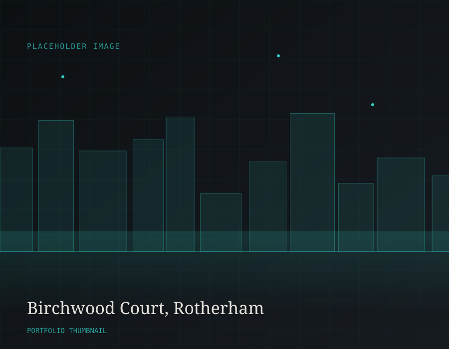
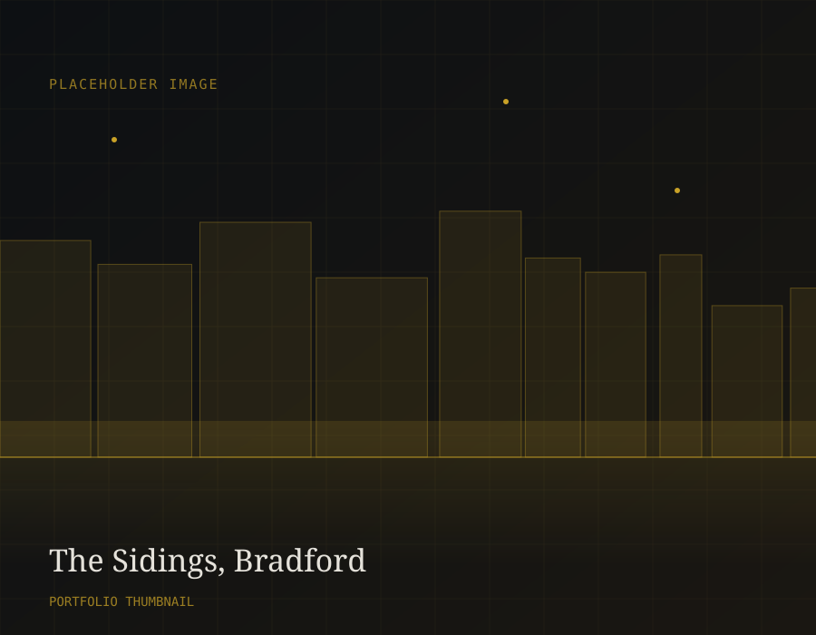
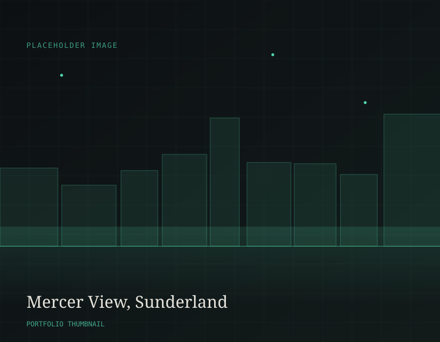

AI-assisted UK property sourcing
The Woodintole way
5 million+ property records enriched with data from Companies House, Land Registry, EPC, ONS, HPI and
more.
AI-assisted analysis finds and scores off-market properties - to deliver acquisitions worth acting on.
01 — Sourcing
Data-driven identification, human-verified decisions.
-
Fragmented data, combined.
The information is out there, but we need it all in one place.
-
Less manual research.
Analysis that would take a team days to compile by hand is assembled in seconds.
-
Record breaking response rate.
Using this tool gives a +10% response rate - unheard of in direct to vendor outbound marketing.
02 — Track record
Sourced, refurbished and let to social housing providers.
Our growing portfolio of high-yield, high ROI, income producing assets. Let to government-partnered Social housing providers on 5-year FRR leases.

2-bed flat · N.East Scotland
Southesk Street, Brechin

2-bed flat · N.East Scotland
Baltic St, Montrose

Some property, some place
Next property in sourcing
How it works
A seven-stage process from data to decision.
Each stage narrows a wide dataset down to a small number of acquisitions worth serious attention.
01
Requirements
What are you looking for and where. The first filter is you.
02
Instant discovery
Multitude candidate properties are surfaced against a range of overlapping attributes.
03
Analyse/ refine
Condition, risk and investment indicators combine to assess interest and progress.
04
Outreach
A single button press = instant, bulk creation of comms and CRM entry. Every letter is bespoke to its own deal.
05
Response/ escalation
Reply data is further scored via an automated valuation pipeline before negotiation begins.
06
Negotiate
Discussions anchored in proven data facillitate realistic, beneficial outcomes for both parties.
07
Introduce or acquire
Verified opportunities are introduced to investors or progressed to acquisition.
Why investors work with us
Property experience and data engineering checked against each other, not one replacing the other.
Acquisitions team, Woodintole Property
We are a UK property business built around a straightforward principle: better information leads to better acquisitions. Artificial intelligence and data engineering do the heavy lifting of research; people make the commercial decisions.
About our methodologyGet in touch
Ready to look at your next acquisition differently?
Whether you are an investor, a social housing provider or considering a sale, we would like to hear from you.